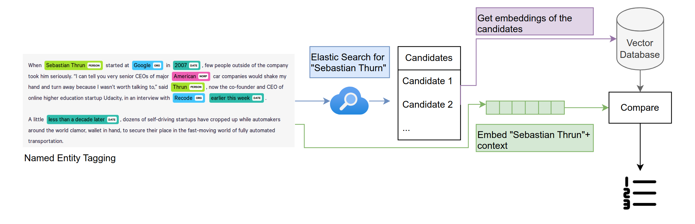

From words to numbers. Methodological perspectives on large scale Named Entity Linking
![]()
Machine Learning, Named Entity Linking, Named Entity Recognition, Historical Data, Natural Language Processing
Introduction
Named entity recognition, disambiguation, and linking are pivotal methods in Natural Language Processing (NLP) applied to historical research. These methods present unique and complex challenges in the context of historical texts (Bunout, Ehrmann, and Clavert 2023; Luthra et al. 2022; Ehrmann et al. 2023). They grapple with the complexities arising from context-dependent meanings of named entities, as well as the issues of polysemy, homonymy, and naming variations.
Historically, solutions ranged from basic string matching to intricate rule-based heuristics. While these methods are still widely used, they often fall short in terms of scalability, generalization, and accuracy, particularly when compared to current machine-learning techniques. Recent advances have seen a shift towards leveraging contextual embeddings to achieve groundbreaking accuracy in these tasks, as evidenced by seminal works such as Yamada et al. (2016); Ganea and Hofmann (2017); and Chen et al. (2020).
Vector embeddings are an essential tool used in NLP to represent words as numerical vectors. When applied appropriately, they can capture semantic information of words depending on the context in which they appear. For instance, in sentences such as «I opened an account at the bank» and «Beavers build dams in river banks,» the word «bank» would be embedded differently. On the other hand, the vector embeddings for «I sat down on the chair» and «I lowered myself onto the seat» would be «close» in the vector space, as they contain similar content.
Regarding linking named entities in a text, e.g. persons, this would mean that we embed them based on the context in which they appear. If there are two viable options (such as the same first name, last name, and time period) for a match between a name and a person, but the name we are searching for appears in an article about architecture and one of the two options is an architect and one a medical doctor, we can now take into account this semantic context as an additional parameter to calculate a possible match.
Methods
In our presentation, we will show a glimpse of the current state of our ambitious project, which aims to create a robust and scalable pipeline for applying embeddings-based NEL to historical texts. In our work, we focus on three key aspects. Firstly, on embeddings-based linking and disambiguation workflow applied to a historical corpus of Swiss magazines (E-Periodica) that uses Wikipedia, Gemeinsame Normdatei (GND), and – since our primary use cases deal with historical material from Switzerland – the Historical Dictionary of Switzerland (HDS) as reference knowledge bases. This part aims to develop a performant and modular pipeline to recognize named entities in retro-digitized texts and link them to so-called authority files (Normdaten), e.g., the German Authority File (GND). With this workflow, we will help to identify historical actors in source material and contribute to the in-depth FAIRification of large datasets through persistent identifiers on the text level. Our proposed pipeline is modular with respect to the embedding model, enabling performance comparison across different embedding model choices and leaving room for future improved embedding models, which capture semantic similarities even better than current popular open-source models such as BERT.
Secondly, we plan to use this case study to reflect upon the interpretation of metrics provided by algorithmic models and their relevance in historical research methodology. We will focus on three key areas: Contextual Sensitivity, Ambiguity Resolution, and Computational Efficiency. By focusing on these aspects, we will provide a comprehensive insight into the models’ operational capabilities, particularly in large-scale historical text analysis. Given the challenges of retro-digitized historical data (OCR quality, heterogeneous contents in large collections, etc.), it is necessary to not only select appropriate models and methods to the specific needs of such material but also to create representative ground truth data for OCR, NER, and NEL. Furthermore, scale considerations drive our case study, as some of our use cases consist of millions of pages.
Finally, we will discuss the role of GLAM (galleries, libraries, archives, and museums) institutions as drivers of change and facilitators, especially when it comes to the use of their collections as data (Padilla et al. 2023).

Conclusion
Current solutions for NEL need more accuracy and scalability. At the same time, such enrichment processes will become standard processes for GLAM institutions so that they can offer enriched data layers to their users as a service. This raises several challenges: The technical challenge to improve the linking workflow itself, the challenge to document the workflow in a transparent and reproducible form, and finally, the methodological challenge to negotiate and interpret the results at the intersection of GLAM institutions, data science, and historical research.